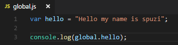
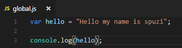
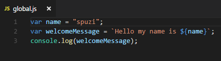

In node.js there is a global object called global. En the node api we can see the objects that are available to us globally: node.js api globals
We can execute a Javascript file by writing "node myjavafile.js" in the console.
The console object is available to us globally because it is a part of the global name space. So, by adding the global name space before this console log, this will actually work the same.
Node js works a little bit different than the browser when it comes to storing variables.
Here I've created a variable for Hello, and that variable will be set to a string. If you're use to using javascript in the window, you know that these variables are added to the global object. That means, we should be able to see our Hello variable by typing global.hello .But if you execute this code you'll see that you get undefined as result.
That's because every node js file that we create is it's own module. Any variable that we create in a node js file, is scoped only to that module. That means that our variables are not added to the global object the way that they are in the browser. We can see this variable simply by removing the global name space.
Node support EcmaScript 6 therefore we can use for example the string template.
There are many things available to us globally. One of the things that's nice to use is a reference to the current directory that we are in and the reference to the current node module that we are using.